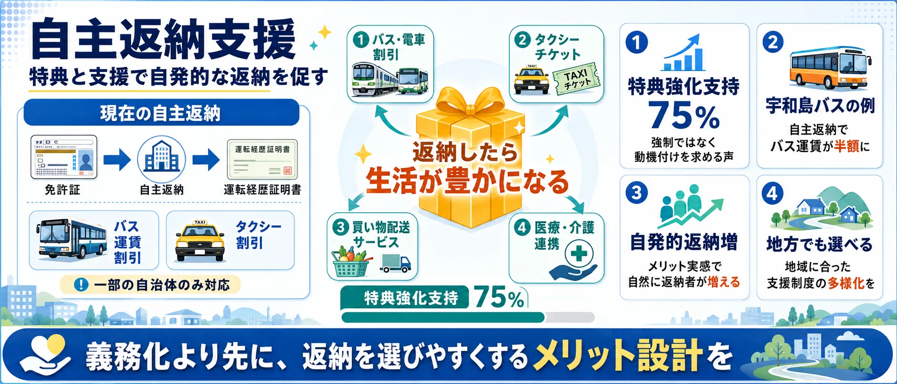

論点①
義務化・事故防止 — 「年齢で強制返納、命を守れるか」
高齢ドライバーの死亡事故報道を受け、75〜85歳などで一律義務化を求める声。全6論点中最多の139件で、感情強度が高い投稿が集中。
義務化: 年齢で一律に法的義務化すべき
懸念: 個人差を無視した一律規制は問題

事故を防ぐための年齢線引きか、暮らしの足を奪わない制度設計か？
Yahooリアルタイム検索で取得したSNS投稿を、事故防止優先（義務化賛成）、地方の足確保（義務化反対）、適性検査強化、インフラ整備などの論点で整理したビューです。世論調査ではありません。
「高齢者の免許返納」の議論は「義務化すべきか否か」だけではありません。地方の移動手段・適性検査の精度・代替交通のインフラ・自主返納へのインセンティブ——6つの論点を整理してから投票に進んでください。
義務化・事故防止 — 「年齢で強制返納、命を守れるか」
高齢ドライバーの死亡事故報道を受け、75〜85歳などで一律義務化を求める声。全6論点中最多の139件で、感情強度が高い投稿が集中。
地方の足・移動権 — 「田舎で免許返納は死活問題」
地方では車なしに通院も買い物もできない。「東京の感覚で語るな」という切実な声が多く、義務化への強い反対（90%超）が特徴（24件）。

適性検査強化 — 「年齢より個人の能力で判断すべき」
認知機能検査・実車試験の厳格化を求め、一律年齢制限の代替案を提唱。サポートカー限定免許など技術的対応を好む立場も含む（20件）。

代替交通整備 — 「インフラ整備が義務化の前提」
デマンド交通・コミュニティバス・ライドシェアの整備が先決という立場。返納させるなら移動手段の代替を保障せよという順番論（9件）。

自主返納支援 — 「特典と支援で自発的な返納を促す」
バス・タクシー割引や買い物支援など、返納のメリットを実感できる制度設計を求める声。強制より誘導を好む立場（7件）。

その他・複合 — 「政治批判・感情表出・分類外」
政治家への年齢制限要求・感情的な怒りの発露・複数論点の混在など、上記5カテゴリに収まらない反応。SNSらしい生の声（12件）。

使い方: 6つの論点を把握してから、次の投票で「自分が一番気になる論点」を選んでください。
高齢運転手による死亡事故が報じられるたび、免許返納の義務化を求める声が上がる一方、地方での生活維持や移動手段確保を重視する反対意見も根強くあります。あなたが最も気になる論点はどれですか？
1あなたが最も気になる論点をタップ （全2問）
※ 世論調査ではありません。投票は匿名で集計され、サーバーに保存されます。
中心の「高齢者免許返納」を6つの論点セクターが囲みます。扇の大きさは投稿数、中心からの距離は意見の強さ（外側ほど強い主張）、点の色はスタンス（赤=義務化賛成 / 青=反対・地方重視 / 灰=中立）。点をクリックするとXポストを開きます。
最多の論点。「年齢（75〜85歳）で一律に法的義務化すべき」という声が大勢を占めます。高齢ドライバーの事故報道を受けた怒りや恐怖が原動力で、「未来ある命を守るために」という切実な訴えが多い。感情強度が高い投稿が集中するセクターです。
「田舎では車がなければ病院にも買い物にも行けない」「東京の感覚で義務化を語るな」という、地方在住者の切実な声。件数は少ないが訴えの強度は高く、移動の自由と生活手段を守る観点から一律義務化に強く反対します。
「年齢で一律に区切るのではなく、認知機能・実車試験をもっと厳格化すべき」という、年齢制限への代替案を求める立場。サポートカー限定免許や技術的な制限（EV・自動運転限定）を提案する声も含まれます。
「返納させるなら、まず代わりの交通手段を整えるべきだ」という立場。デマンド交通・コミュニティバスの充実、ライドシェアの拡大など、移動手段の代替整備が義務化の前提条件だという考え方です。
「強制するのではなく、特典や支援で自主的な返納を促すべき」という立場。バスや電車の割引、タクシーチケット、買い物支援など、返納のメリットを実感できる制度設計を求める声です。地方でも選びやすい仕組みへの期待が込められています。
「政治家にも年齢制限を」「若者の事故も多いのに高齢者だけ問題視するのはおかしい」など、免許返納そのものへの賛否より別の論点を持ち出す投稿や、感情的な怒りの発露が中心。SNSならではの生の反応が集まるカテゴリです。
高齢ドライバーによる重大事故が相次いで報道されたことをきっかけに、一定年齢以上の運転免許の返納を義務化すべきかどうかが議論になっています。現在の制度では返納はあくまで任意で、75歳以上には認知機能検査、一定の違反歴がある人には運転技能検査が課されています。
義務化に賛成する立場からは「加齢による判断力・身体能力の低下は避けられず、事故を未然に防ぐべきだ」という主張があります。一方で反対する立場からは、「地方では車がなければ生活が成り立たない」「年齢で一律に区切るのは合理的でない」「若年層の事故率も高く、高齢者だけを問題視するのは不公平だ」という反論があります。
折衷的な立場として、サポートカー限定免許のような条件付き免許の拡充、公共交通やデマンド交通の整備、免許とは別の移動手段の保障を先に進めるべきだという意見も多く、安全と生活の足の確保をどう両立するかが核心的な論点になっています。
相次ぐ高齢ドライバーの事故から「未来ある命を守るため」、一律の年齢（75〜85歳など）で返納義務化に踏み切るべきとする立場。
都会とは異なり、車がなければ買い物や通院ができない地方での生活環境を考慮し、一律義務化に強く反対する立場。
実車試験の厳格化や代替交通機関の整備、自主返納を促す特典支援など、他のアプローチを求める立場。
断定、罵倒、文脈不足など、そのままでは記事化に注意が必要な反応。
| 分類 | 免許返納 おかしい | 免許返納 地方 生活 | 免許返納 年齢制限 | 免許返納 義務化 | 運転免許 自主返納 | 高齢ドライバー 事故 対策 | 高齢者 免許返納 反対 | 高齢者 免許返納 賛成 | 高齢者 運転 やめろ | 高齢者 運転 義務化 | 合計 |
|---|---|---|---|---|---|---|---|---|---|---|---|
| 免許返納義務化に賛成（高齢運転手の事故防止を最優先） | 19 | 2 | 8 | 28 | 1 | 1 | 0 | 2 | 0 | 7 | 68 |
| 免許返納義務化に反対（地方の生活維持や移動手段確保を重視） | 5 | 13 | 0 | 0 | 0 | 0 | 0 | 1 | 0 | 0 | 19 |
| 適性検査や技術的制限の強化で対応（年齢一律の義務化は避けるべき） | 0 | 1 | 1 | 1 | 0 | 6 | 1 | 0 | 1 | 0 | 11 |
| 代替移動手段や公共交通機関の整備を優先すべき | 0 | 3 | 0 | 0 | 3 | 1 | 0 | 0 | 0 | 0 | 7 |
| 自主返納のインセンティブ強化（特典や支援）を進めるべき | 0 | 1 | 0 | 0 | 14 | 0 | 0 | 0 | 0 | 0 | 15 |
| その他・分類保留 | 14 | 4 | 1 | 6 | 21 | 13 | 0 | 0 | 2 | 2 | 63 |
| 分類 | 義務化賛成 | 義務化反対 | 適性検査強化 | インフラ優先 | 自主返納促進 | その他 | 合計 |
|---|---|---|---|---|---|---|---|
| 免許返納義務化に賛成（高齢運転手の事故防止を最優先） | 68 | 0 | 0 | 0 | 0 | 0 | 68 |
| 免許返納義務化に反対（地方の生活維持や移動手段確保を重視） | 0 | 19 | 0 | 0 | 0 | 0 | 19 |
| 適性検査や技術的制限の強化で対応（年齢一律の義務化は避けるべき） | 0 | 0 | 11 | 0 | 0 | 0 | 11 |
| 代替移動手段や公共交通機関の整備を優先すべき | 0 | 1 | 0 | 6 | 0 | 0 | 7 |
| 自主返納のインセンティブ強化（特典や支援）を進めるべき | 0 | 1 | 0 | 0 | 14 | 0 | 15 |
| その他・分類保留 | 3 | 0 | 0 | 0 | 0 | 60 | 63 |
 自転車の青切符
自転車の青切符 部活動の地域移行
部活動の地域移行 憲法改正論議
憲法改正論議